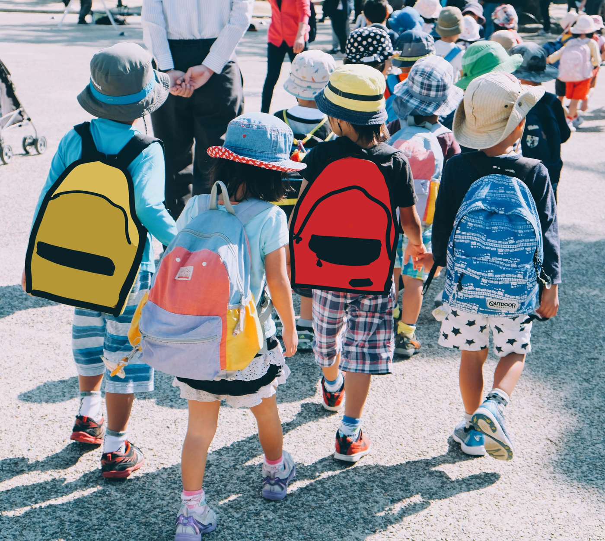

We’re a group of dedicated parents and individuals who share a common goal of providing the best possible
care and support for our children after school.

As working parents, we understand the challenges of balancing work and
family life. We also understand the importance of ensuring that our children are in a safe, nurturing environment when they are not in school.
We believe that by working together as a community, we can provide our
children with the best possible care and support after school. Our goal is
to make sure that every child feels valued, supported, and empowered to
reach their full potential.